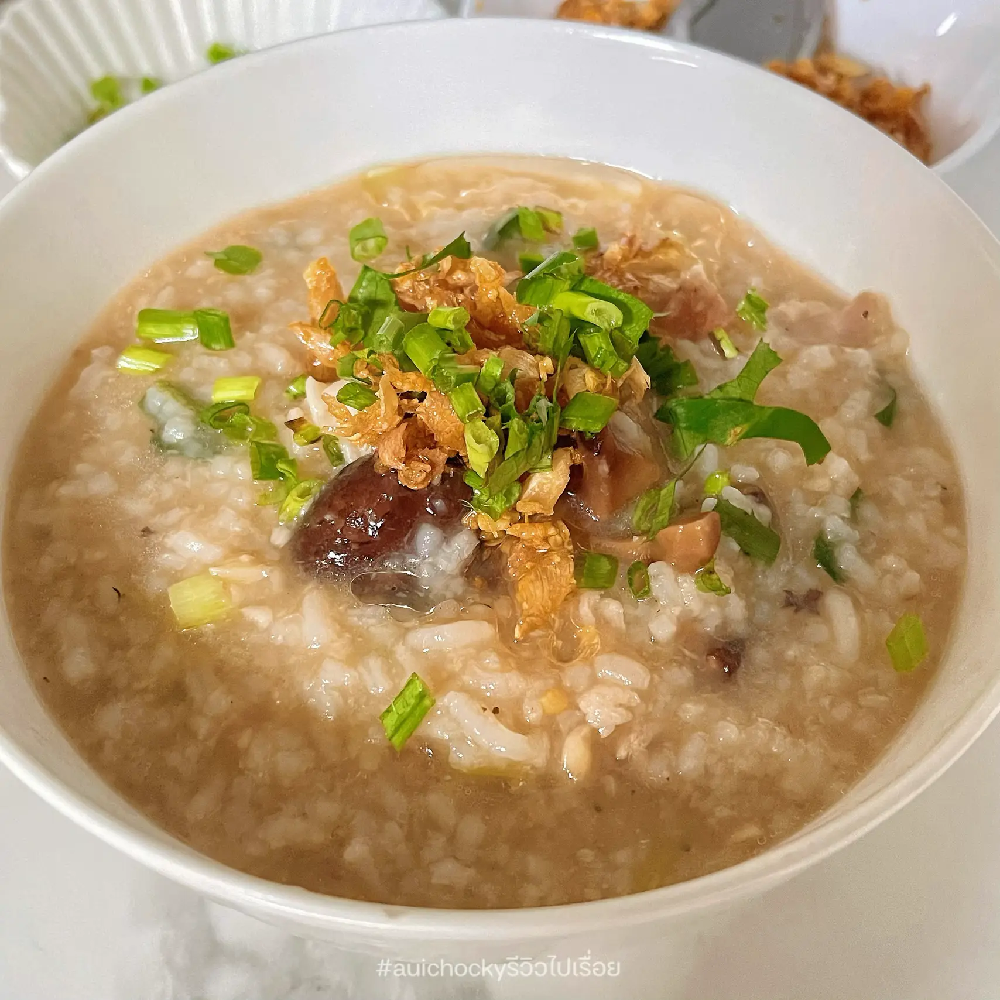

ข้าวต้มทรงเครื่อง

ส่วนประกอบ
- กระดูกหมู 800 กรัม
- รากผักชี 4 ราก
- น้ำเปล่า 3 ลิตร
- ข้าวหอมมะลิ 2 ถ้วย
- กุ้งแห้ง 50 กรัม
- ปลาหมึกแห้ง 50 กรัม
- ตั้งฉ่าย 2 ช้อนโต๊ะ
- หมูสับ 200 กรัม
- กระเทียมสับ 1 ถ้วย
- ซีอิ๊วขาว 2 ช้อนโต๊ะ
- พริกไทย
- ต้นหอมซอย
- ขึ้นฉ่าย
วิธีการทำ
- ตั้งหม้อใส่น้ำลงไป ตามด้วยใส่รากผักชี และกระดูกหมูลงไป ต้มต่อ 1 ชั่วโมงจนกระดูกหมูเปื่อยนุ่ม
- ผัดหมูสับ ตามด้วยกุ้งแห้ง ปลาหมึกแห้ง และตั้งฉ่าย ปรุงรสด้วยซีอิ๊วขาวผัดให้ทุกอย่างเข้ากัน และจนหมูสุก พักไว้
- หลังจากกระดูกหมูเปื่อยนุ่มแล้ว ใส่ข้าวหอมมะลิลงในหม้อ ตามด้วยใส่เครื่องที่ผัดเตรียมไว้ลงไป คนเรื่อย ๆ จนข้าวสุก เม็ดเริ่มแตกบาน เท่านี้ก็พร้อมจัดเสิร์ฟ